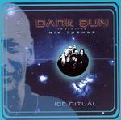

| Artist: | Dark Sun |
| Title: | Ice Ritual |
| Label: | Burnt Hippie Recordings BHR-004 |
| Length(s): | 57 minutes |
| Year(s) of release: | 1999 |
| Month of review: | [12/2004] |
| 1) | Sonic Attack | 3.30 |
| 2) | Watching The Grass Grow | 3.53 |
| 3) | Psychedelic Warlords | 5.11 |
| 4) | Kadu Flyer | 3.46 |
| 5) | Utopia '84 | 1.08 |
| 6) | D-Rider | 3.40 |
| 7) | The Right Stuff | 1.46 |
| 8) | Master Of The Universe | 3.51 |
| 9) | Assault & Battery Part 1 | 3.19 |
| 10) | The Golden Void Part 2 | 5.11 |
| 11) | Brainstorm | 4.35 |
| 12) | Hassan I Sahba | 4.10 |
| 13) | Silver Machine | 3.42 |
| 14) | Dream Circuit (bonus) | 9.17 |
Psychedelic Warlords has the same anarchistic approach as Hawkwind. Plenty of vocalists, nobody really singing in line with the rest. Kadu Flyer seems a bit older than the rest, with a bit of a sixties feel. The vocals are a bit mumbled, but the vocal melody comes out well enough. There is something of Bowie in this song.
Utopia '84 is another recitation track, followed by the flute of D-Rider. The sound seems quite bootleggy here, but the melody is good. I mean it is all perfectly listenable, but the sound is definitely a live one and it may be on purpose, but the guitar does not come through at all. The Right Stuff is a short (punk)rocker, followed by one of Hawkwind's most well known: Master Of The Universe. We rock on with Assault & Battery Part 1, followed by the more spacey The Golden Void part 2. Today I seem to have a preference for the quieter pieces, the rambling punk rock tracks, being too much alike.
Next up are three well-known Hawkwind tracks, Brainstorm, the fast paced, pumping Hassan I Sahba (fortunately not a lengthy dub version) and of course the hit single, Silver Machine. The final track is the cosmic Dream Circuit (bonus), which is quite good, lengthy, nice effects, varied. I'd be interested to hear what else they made.